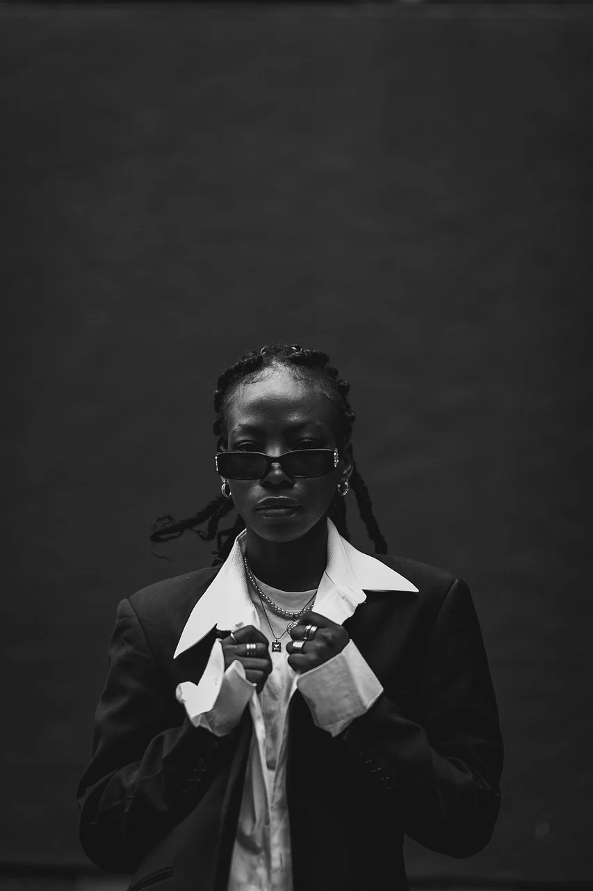
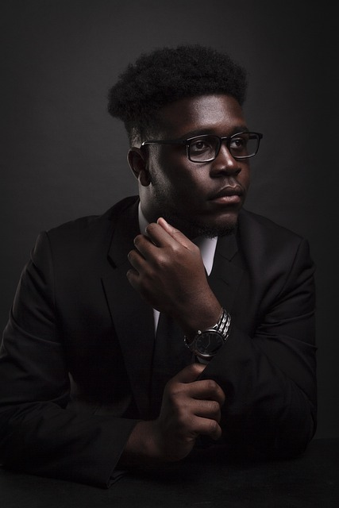
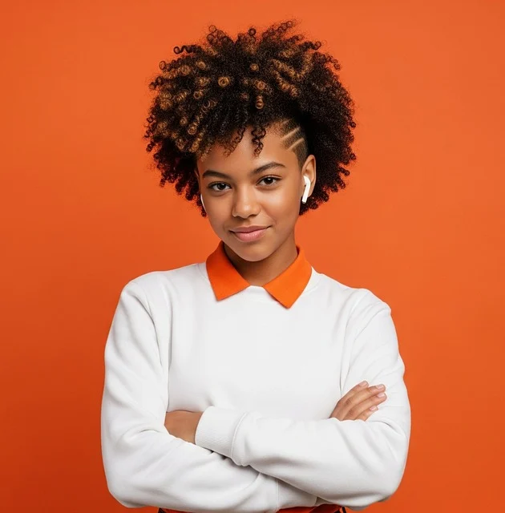

Isis Kael
Desenvolvedora || UI/UX

Mateus Martins
Analista de Dados

Clara Almeida
Desenvolvedora Front-end
Camila Castro
Especialista em Marketing Digital com Foco em Redes Sociais
Marcelo Guimarães
CTO
Marina Oliveira
Analista de Negócios em Tecnologia